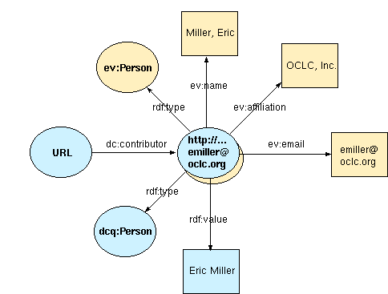

Initial version: 1999-06-06, Eric J. Miller emiller@oclc.org
This is a work in progress and a personal view of the relationship between RDF and the Dublin Core Metadata Initiatives data modeling activity. This is not a formal publication of any DCMI working group, or of the DCMI itself. Nor is this complete...
The Dublin Core Metadata Initiative (DCMI) is a international effort designed to foster consensus across disciplines for the discovery-oriented description of diverse resources in an electronic environment. The DCMI has, in part and to this goal, defined the Dublin Core Element Set (DCES) which is intended to support cross-discipline resource discovery. As a core set of concepts, the DCES is not intended to satisfy every possible declarative need in every discipline. The requirement of providing the means for a modular, extensible, metadata architecture to address local or discipline-specific descriptive needs has been identified since the very beginning of the DCMI work [WF]. The formalized representation of this requirement has been the basis for the Dublin Core Data Model activity. This article provides an general overview of these function requirements as well as an introduction to the supporting data model and syntactic representation.
The Dublin Core Metadata Initiative element working groups have primarily been focusing on semantic clarification of the DCES and the identification of common cross-domain qualifiers to support richer descriptive requirements. While this focus has allowed rapid conceptual development free of the constraints imposed by specific syntactic or structural applications, this focus has placed an additional burden on individual implementors. Specifically with regards to the developement of internal mechanisms for encoding properties define by the DCMI and local domain-specific properties; mechanisms which are not always compatible with those of their potential collaborators elsewhere [DCDM].
The means for a formalized representation to support the encoding needs for implementors has been the basis for the Dublin Core Data Model activity. To facilitate the standardization of these interoperable descriptive practices, a formal datamodel able to support the requirements of the DCMI and a corresponding means of syntactic represetnating this information is requireed. In order to develop such a model the identification of both implicit and explicit requirements that are common across of the working group efforts are necessary. The following are a basis for these functional requirements:
A formal definition and systematic representation of these require are a necessary component for supporting interoperability across implementors. The formalized representation of these requirement has been the basis for the Dublin Core Data Model activity. The following sections outline the basic nature of this model and how this work addressing the outlined functional requirements defined by the DCMI.
In order to address these requirements a formal model is required to facilitate the representation and declaration that satisfy these needs. Early in this work, it was recognized that standards were required across the web for the Dublin Core Metadata Initiative to succeed as a global level. As such, the generalization of these functional requirements defined by the DCMI were, in part, the basis behind the development of the W3C's Resource Description Framework (RDF), the metadata architecture for the web. The basis for the Dublin Core Data Model is built simply on the foundation model defined by RDF. In essence, it is simply the following:
There are resources in the world that we would like to describe. These resources have properties associated with them. The values of these properties can be literals (e.g. string-values) or other resources.Now, with any other basic data model, clarification and examples of this basic model are required.
A resource can be anything that can be uniquely identified.
A resource can be anything that has identity. Familiar examples include an electronic document, an image, a service (e.g., "today's weather report for Los Angeles"), and a collection of other resources. Not all resources are network "retrievable"; e.g., human beings, corporations, and bound books in a library can also be considered resources [RFC2396]. The granular identification of a resource, however, (web site, web page on a site, image in a web page, etc.) is application specific and has no bearing on the underlying model.
Properties are specific types of resources.
The Dublin Core Element Set defines a set properties and associated semantics that are common to many resource description communities. The DCMI is declaring additional properties for richer descriptions (e.g. qualifiers) and domain specific needs (dc-education, dc-libraries, dc-government, dc-business, etc.). Each property defined will have unique identify along with at human readable labels and clear semantic definitions. Each property declared may additionally define permitted values, the types of resources it can describe, and/or its relationship (e.g. 'semantic refinement') with other properties.
Classes of objects are specific types of resources.
The Dublin Core Element Set [DCES] loosely defined the notion of a "DLO" at the first Dublin Core Workshop. This loose concept was intentional due to the desire to scope discussions and focus on common semantic properties that exist across classes of objects, rather than the specific classes themselves. As the DCMI has evolved, it seems clear that both the declaration of properties that are common across objects and the declaration of common classes of objects are useful in the practical use and reuse across many descriptive communities.
Literal are terminal resources.
Literals are simple text strings. Literals may have structured content but are not further evaluated by the modeling processor.
This simple model is basis for very powerful expressions. In order to communicate this model among applications, a common syntactic means for transmitting this information is required. For this communication, a XML representation of the RDF datamodel is defined. The application of the datamodel in terms of the requirements defined by DCMI are the focus of the remaining sections of this article.
When we write a sentence in natural language we use words that are meant to convey a certain meaning. That meaning is crucial to how humans understanding the statements and, in the case of applications on the web, is critical to establishing that the correct processing occurs as intended. It is very important that both the writer and the reader of a statement understand the same meaning for the terms used, such as 'Creator', 'approvedBy', 'Copyright', etc. or confusion will result. In a medium of global scale such as the World Wide Web it is not sufficient to rely on shared cultural understanding of concepts such as "creatorship"; it pays to be as precise as possible. [RDFMS]
The Dublin Core Metadata Initiative has defined a core set of semantics in the declaration of the DCES. The DCMI is currently defining additional semantics in the declaration of the qualifier work and domain-specific (dc-education, dc-libraries, dc-government) initiatives. The expression of these semantics is through the reference to a schema. A schema can be viewed as a kind of dictionary which uniquely identifies the terms and provides the means for specifying semantics. A variety of schema forms can be used with RDF, including a specific form defined in a separate document [RDFSchema] that has some specific characteristics to help with automating tasks using RDF.
Utilizing declarative mechanisms defined by RDF schemas, the semantics defined by the Dublin Core Metadata initiative can be uniquely identified and described. Thus a given resource uniquely identified by the URI 'http://purl.org/dc/elements/1.1/' can within it declare the following:
... <!-- declarations in resource http://purl.org/dc/elements/1.1/ --> <rdfs:Property rdf:ID = "contributor"> <rdfs:label> Contributor </rdfs:label> <rdfs:comment> An entity responsible for making contributions to the content of the resource. </comment> </rdfs:Property> ...
Thus providing the semantic "'contributor' as defined by the Dublin Core Metadata Initiative" that can be uniquely identified by the URI http://purl.org/dc/elements/1.1/contributor.
The Dublin Core Metadata Initiative recognized early on that there would never be one "true" declarative set of semantics to represent all resource descriptive requirements. As such, semantics defined in various different communities may be used for supporting descriptive practices. In order to avoid confusion between independent (and possibly conflicting) definitions of the same term, RDF uses the XML namespace facility. Namespaces are simply a way to tie a specific use of a word in context to the dictionary (schema) where the intended definition is to be found. As such, the DCMI's requirement providing the ability to mix semantics defined in various different communities is accomplished using this mechanism. A simple example of this is as follows:
... xmlns:dc = "http://purl.org/dc/elements/1.1/" xmlns:agls = "http://www.naa.gov.au/govserv/agls/vocab/" ... ... <dc:contributor> Ned Kelly </dc:contributor> <agls:jurisdiction> Australia </agls:jurisdiction> ...
This simple example uses the DCMI vocabulary (as defined by the semantics declared in 'http://purl.org/dc/elements/1.1/') and an AGLS Australian Government Locater Service vocabulary (as defined by the semantics declared in 'http://www.naa.gov.au/govserv/agls/vocab/') for describing a given resource. More specifically, based on rules defined by XML namespace, this example uses the elements 'contributor' (as defined by 'http://purl.org/dc/elements/1.1/contributor') and 'jurisdiction' (as defined by 'http://www.naa.gov.au/govserv/agls/vocab/jurisdiction'). The use of XML namespaces in conjunction with a common declarative mechanisms defined by RDF allow for the inclusion of modular semantic vocabularies for the description of resources.
The Dublin Core Metadata Initiative additional recognized early on that various communities may choose to utilize richer semantic definitions that those provided by the Dublin Core Element Set in their descriptions. A requirement that evolved form this recognition was the need for making explicit relations between these richer semantics and those of the Dublin Core Element Set. The statement that "Michaelangelo" is the "cimi:painter" (and as such the "dc:contributor") of the "Sistine Chapel" is such an example. This type of "semantic refinement" as defined by DCMI was additionally conveyed to the RDF Schema working group. Recognizing this was a common problem among many applications, this RDF Schema group introduced a mechanism to support such a relationship of "semantic refinement".
<!-- declarations in resource http://www.cimi.org/vocab/ --> <rdfs:Property rdf:ID = "painter"> <rdfs:label> Painter </rdfs:label> <rdfs:subPropertyOf rdf:resource = "http://purl.org/dc/elements/1.1/contributor" /> </rdfs:Property>
The RDF mechanism "rdfs:subPropertyOf" provides a powerful means of declaring relations among different vocabularies. Thus when an RDF processor interprets the following metadata instance data:
... xmlns:cimi = "http://www.cimi.org/vocab/" ... ... <rdf:Description rdf:about = "URI:MID:MEDICI/vatican/sistine_chapel"> <cimi:painter> Michalangelo </cimi:painter> </rdf:Description> ...
Such processor would recognize the sub-type relationship that exists between these two semantic declarations. This recognition, in essence, allows for an RDF application to know that "Michaelangelo" is the "cimi:painter" (and to infer a "dc:contributor") of the "Sistine Chapel". Utilizing this RDF Schema mechanism is a powerful way of representing the Dublin Core's notion of "semantic refinement" and as such satisfies this requirement.
The ability to specify a particular encoding scheme is critical to the interpretation of some types of metadata. As mentioned earlier, dates, for example, are written in different formats in different places. The DCMI recommendation for date encoding [W3CDTF] is a simplified derivative of the ISO 8601 date encoding standard, but a given application could specify an alternate encoding for local purposes. Ambiguity between these (and other similar cases) can be resolved by identifying the encoding format in which the date is encoded.
A useful mechanism for identifying a particular encoding scheme is through the concept of 'data-typing'. Data typing is the notion providing a mechanism for the analysis and/or constraint matching to ensure validity or conformance of a particular value. In RDF, we can defined a data-type in terms of a class declaration.
... <!-- declarations in resource http://purl.org/dc/elements/2.0/ --> <rdfs:Class rdf:ID = "DDC"> <rdfs:label> Dewey Decimal Classification </rdfs:label> <rdfs:comment> A concept defined by the Dewey Deciaml Classification System </comment> </rdfs:Class> ...
And reuse this in the following desciption to providing a mechanism for the analysis and/or constraint matching of the particular defualt value (identified by the reserve RDF semantic 'rdf:value').
...
<dc:subject>
<dcq:DDC>
<rdf:value>300.435</rdf:value>
</dcq:DDC>
</dc:subject>
...
Many disciplines additionally use classification schemes, controlled vocabularies or thesauri to describe the content of resources. Creators of metadata need to be able to specify such schemes so as to leverage existing knowledge structures. The Dewey Decimal System, Medical Subject Headings, the Art and Architecture Thesaurus are examples, but there are many others.
The same data-typing mechanism for identifying a particular encoding scheme can be leveraged for the use of the identification of controlled vocabulary. The following, for example, utilizes the same data-type declration, but using additional referencing RDF provides, uniqly identified the particular DDC concept and provides the ability to derefernece this concept and learn more about.
... <dc:subject> <dcq:DDC rdf:resource = "http://purl.org/ddc/21/300.435" /> </dc:subject> ...
This example, in essence, offers the ability of exposing controlled vocabulary in ways that allow for the additional understanding of contextual information.
The use of compound structures as values of metadata is important to many communities, including the use of authority records for authorized versions of the names of subjects, places, corporate entities, and people. In actuality, these subjects, places, entities, etc. are simply resources with particular characteristics or properties associated with them. The notion that these resources may be combined in various descriptive ways (and specifically as the value associated with a property defined by the DCES) is derivative of the term 'compound value'. A 'person' for example may have a name, email address, affiliation, etc. Properties characteristic of a particular individual. These characteristics are independent of weather this person is the 'creator', 'publisher' or 'subject' associated with some other resource.
And the resource dereferenced at location http://purl.org/laf/entities/emiller@oclc.org would be:
... xmlns:ev = "http://purl.org/laf/entities/vocab/" > ... <ev:Person rdf:resource = "http://purl.org/laf/entities/emiller@oclc.org"> <ev:name> Eric J. Miller </ev:name> <ev:eid> 2325 </ev:eid> <ev:affiliation> OCLC Online Computer Library Center, Inc. </ev:affiliation> <ev:email> emiller@oclc.org </ev:email> </ev:Person> ... `
As such, this resource could be used in a variety of descriptions and descriptive manners:
... <dc:creator rdf:resource = "http://purl.org/laf/entities/emiller@oclc.org" /> ..
... <epinions:endorsedBy rdf:resource = "http://purl.org/laf/entities/emiller@oclc.org" /> ..
A confusion has surfaced with regards to the relationship between vocabularies that are defined by the DCMI and other vocabularies when describing compound values. In essence, this is the relation of two separate descriptions. Thus the following syntactic representation describing the person (identified by 'http://purl.org/laf/entities/emiller@oclc.org') who is a contributor to a resource (identified by 'URL'):
...
<rdf:Description rdf:about = "URL">
<dc:contributor>
<dcq:Person rdf:resource = "http://purl.org/laf/entities/emiller@oclc.org" />
<rdf:value> Eric Miller </rdf:value>
<dcq:Person>
</dc:contributor>
..
can be graphically represented in the following:

The Dublin Core Metadata Initiative is currently identifying and provding semantics for a core set of types of resource (people, corporation, place, etc.) that will facilitate the description of electronic resource. Additionally, since there are so many existing ways of describing these classes of resources, the DCMI is also considering a simple set of characteristics that may be used to minimally facilitate the discovery and description of these resources.
A formalized data model is required to support the DCMI functional requirement for a modular, extensible, metadata architecture. ...
The author is indebted to the several persons for helping with this article. Specifically, the author would like to credit Erik Jul (fill in here) for their comments, criticism, insight and support.
[WF] The Warwick Framework
[RFC2396]
[RDFMS] Resource Description Framework (RDF) Model and Syntax Specification, Lassila and Swick Eds., Feb 1999, http://www.w3.org/TR/REC-rdf-syntax/
[RDFSCHEMA] Resource Description Framework (RDF) Schema Specification, Brickely and Guha Eds., Mar 1999, http://www.w3.org/TR/PR-rdf-schema/
[XMLNS] Namespaces in XML, Bray, Hollander and Layman Eds., Jan 1999 http://www.w3.org/TR/REC-xml-names/
[XMLDT] XML Schema Part 2: Datatypes, Biron and Malhotra Eds., Nov 1999, http://www.w3.org/TR/xmlschema-2/